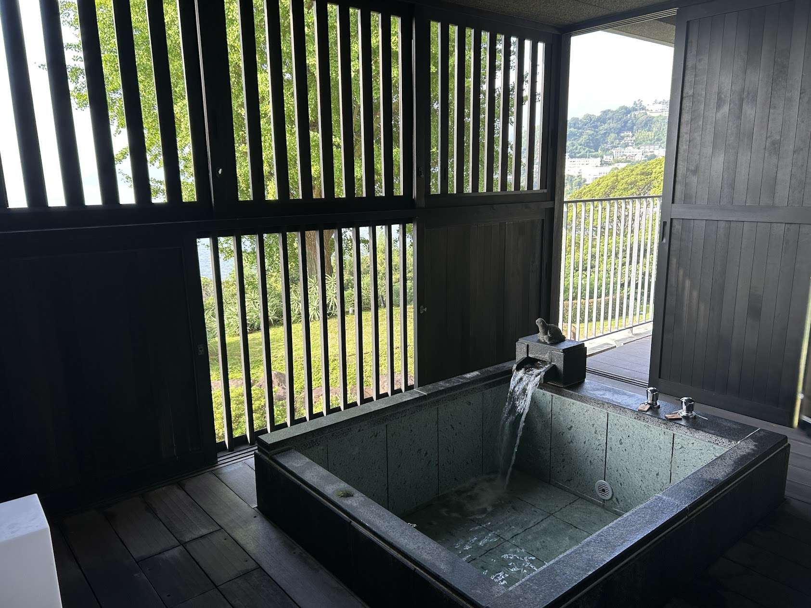

東急ハーヴェストクラブ熱海伊豆山
会員制のホテル
ホテルの中でくつろぎたい人向け


名称：東急ハーヴェストクラブ熱海伊豆山
予算：\5000～7000
アクセス：東海道新幹線「熱海駅」よりウェルカムバス（予約不要/無料）で約10分
地図
コメント
熱海駅からシャトルバスが出ており、アクセスは便利。
会員制のホテルだが、建物の大きさ以外に特に特筆するべき点はない。
朝食と夕食を提供するレストランがあるが、価格の割には味は一般的。
少しグレードの高い部屋には部屋付きの露天風呂があり、それはとても良かった。
屋外プールやジャグジー等があり、ホテルでゆっくりしたい人には合っている。
大浴場の露天風呂からは海が一望できる。初島も見られる。
日の入りの時間帯は景色がいい上に人が少ないので狙い目。